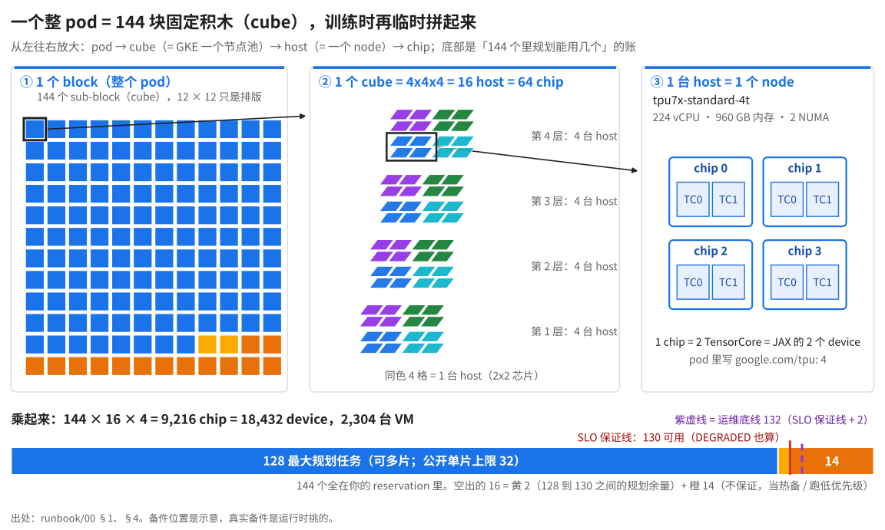
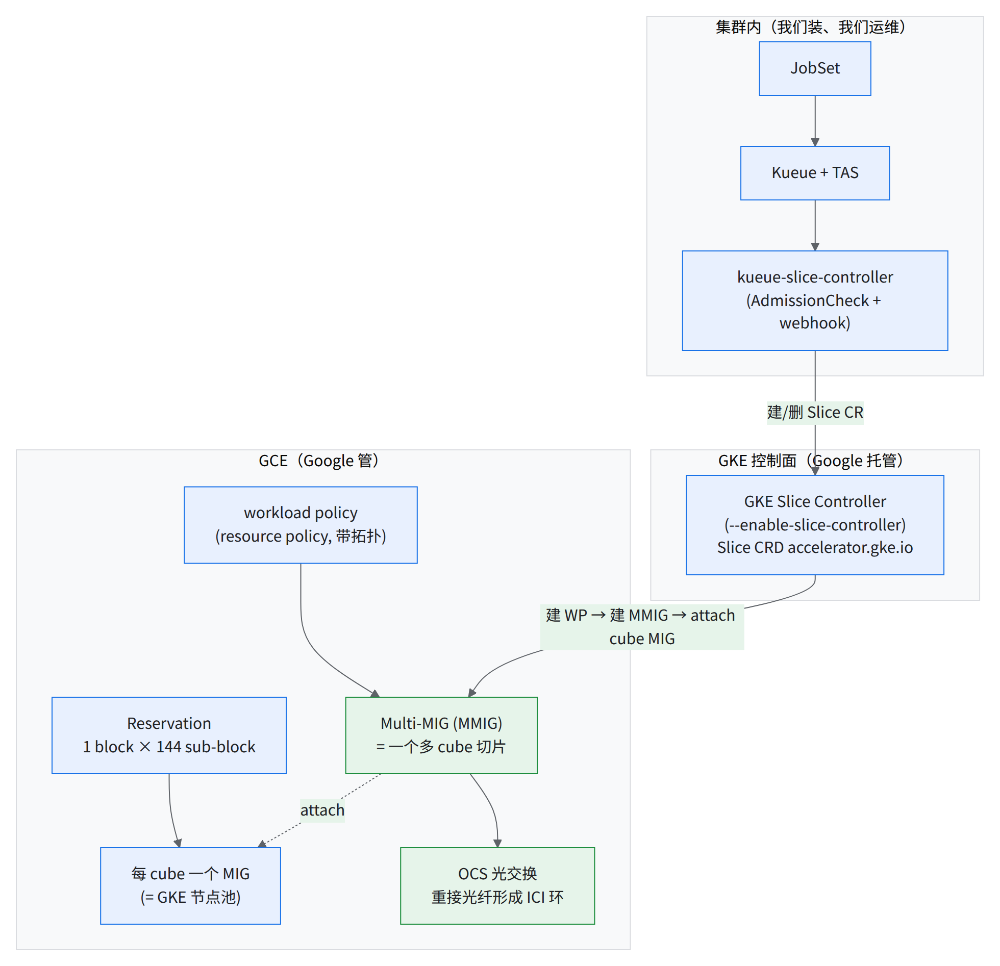
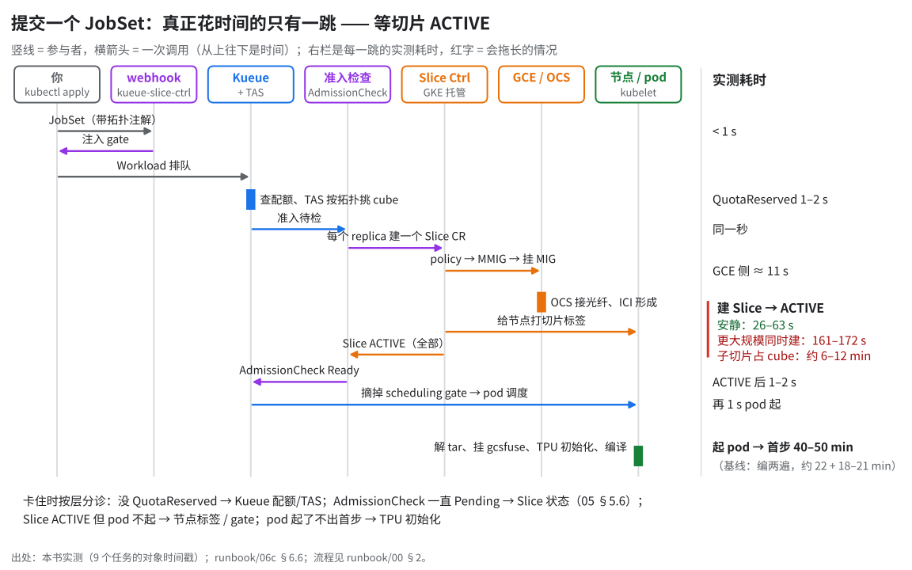
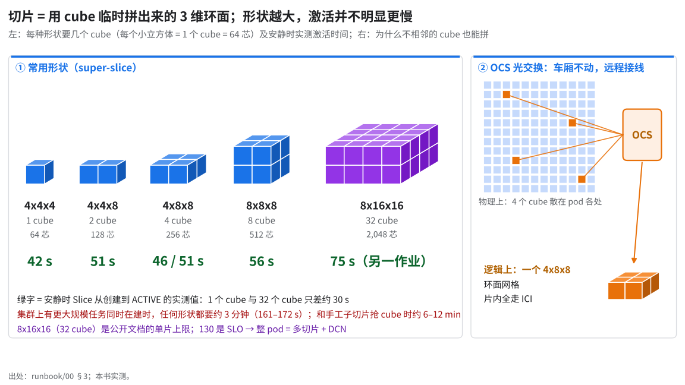
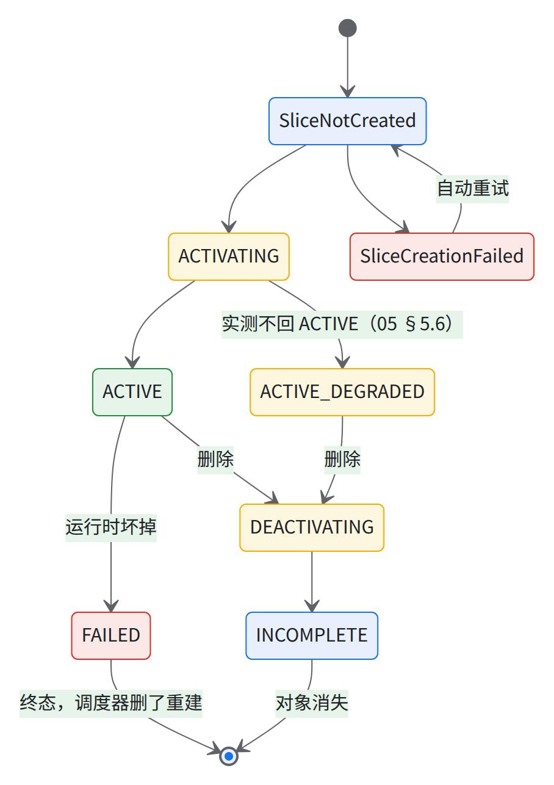
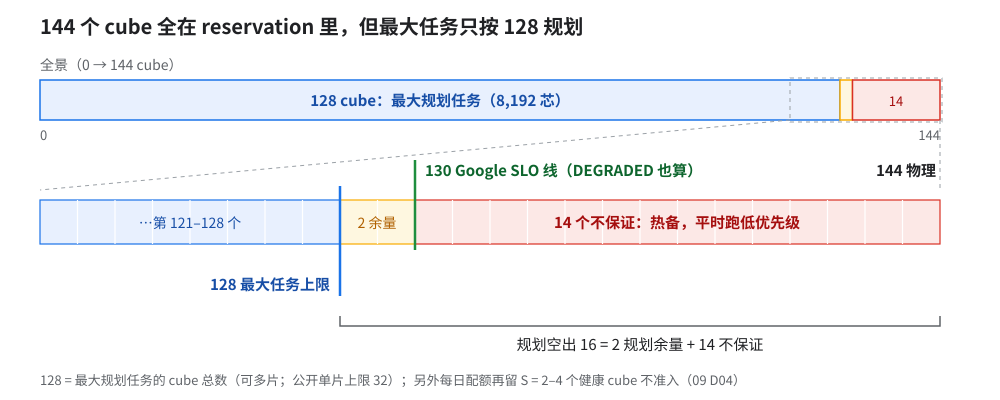
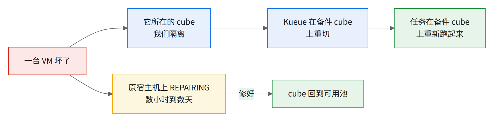

00 总览：一个整 pod 是什么
9,216 颗芯片不是「2,304 台一样的机器」，而是 144 个固定积木块，用光交换临时拼起来跑训练。 和普通 GKE TPU 节点池（建好就是一片、能直接跑；坏一台 GCE 换新的）三处相反：节点池建好不能直接跑；切片运行时临时拼；坏了没人替你换。
- 9,216 颗 TPU7x 芯片
- 144 个 cube（积木块）
- 2,304 台 host / VM
- 18,432 个 JAX device
- 130 个 cube 在 SLO 目标内
0.先看一张图：谁包含谁

GKE 上：1 cube = 1 个节点池（16 node）；1 host = 1 node（tpu7x-standard-4t），pod 写 google.com/tpu: 4。
💡一句话记住cube 是积木，slice（切片）是临时拼出来的机器；训练跑在切片上，不跑在节点池上。
1.物理与计费单位
| 单位 | 等于 | 本 pod 数量 |
|---|---|---|
| chip | 2 个 TensorCore = JAX 里 2 个 device | 9,216 chip = 18,432 device |
| host / VM | tpu7x-standard-4t：4 chip、224 vCPU、960 GB RAM、2 NUMA |
2,304 |
| sub-block = cube | 16 host = 64 chip，拓扑 4x4x4 | 144 |
| block = superpod | 144 sub-block | 1 |
| reservation | ALL_CAPACITY / DENSE / GROUPED 维护 | 1 |
每芯片（公开页 TPU7x 源https://docs.cloud.google.com/tpu/docs/tpu7x）：2 TensorCore + 4 SparseCore；BF16 2,307 / FP8 4,614 TFLOP/s；HBM 192 GiB、7,380 GB/s（两个 chiplet 各 96 GiB，各算 1 个 device）；ICI 1,200 GB/s 双向、每轴 200；DCN 100 Gb/s。
- 每 device：HBM 实报
94.74 GB可用。MaxText 日志标 GB，实为 GiB（÷2^30）；物理 96 GiB。 - BF16 峰值 1,153.5 TFLOP/s（= 每芯片 2,307 ÷ 2）。
- 默认功耗档
p_state=3把单 device 的天花板压到约 990 TFLOP/s（约 86%）；按时钟周期推约 998（= 04 章 C1 卡给的默认档天花板 1,996 /芯片 ÷ 2；按 1.9 GHz 整数算是 996，同一个量）[推断，04 C1 卡]。 - 实测默认档 bf16 matmul：单 device 测法 868（N=16384）；整芯片测法折半约 861（N=16384）–904（N=32768）。满功耗档（
p_state=7，下称 P7）单 device 测法 995。
⚠️「chip」和「device」别混配额、
google.com/tpu、SLA 都数 chip；JAX / MaxText 日志和并行度数 device（= chip × 2）。看到规模数字先问是芯片还是 device：一个 4x8x8 是 256 芯 = 512 device。
1.5贯穿全书的比方：一个车辆段和它的信号楼
pod 是车辆段：144 节车厢停在固定股道从不挪动，贯通道默认断开；信号楼远程把几节接成一列，跑完拆开。
| 真实的东西 | 车辆段里的对应 | 记住什么 |
|---|---|---|
| cube | 固定股道上的一节车厢 | 不能同属两列车 |
| PROVISION_ONLY 节点池 | 通电但贯通道没接 | Ready ≠ 能跑 TPU |
| OCS 光交换 | 信号楼接线台 | 不相邻也能编一列；坏一台 = 全部 DEGRADED |
| Slice | 临时编好的一列车 | 训练跑在列车上 |
| ICI / DCN | 列车内贯通道 / 列车间无线电 | 同口径后者约慢 50 倍（术语表） |
| multislice | 一个团分乘几列同型号列车 | 整 pod 训练 = 多列车 |
| sub-slice | 包厢被单独卖出 | 这节编不进大列车（碎片） |
| GKE Slice Controller | 信号楼调度员（Google 托管） | 真正接线拆线 |
| Kueue / TAS | 售票处 / 按车厢号分座 | 同团落在同组 cube |
| kueue-slice-controller + AdmissionCheck | 传令员 + 检票闸机 | 整列编好才开闸；闸机坏了全站进不了人 |
| 一片坏 → 全部重切 | 一列出事，全团解散重编 | 要有备件车厢 |
| Slice finalizer | 解编锁 | 别手动去（05）；硬注销 → 挂旧车次牌 = 假缺货 |
对不上的地方：切片是三维 AxBxC 环面网格（toroidal mesh）（§3），想形状用积木；接线要几十秒到几分钟；「一列出事整团重编」现实里不合理，正是反直觉点（05 §5.2）。
2.软件分层（谁管什么）

读图：出问题先判断卡在哪层（05 §5.6 按三层分诊）。
两个「slice controller」别搞混：
| GKE Slice Controller | kueue-slice-controller |
|
|---|---|---|
| 住在哪 | Google 托管（--enable-slice-controller） |
ns slice-controller-system，交付方装（03 §3.3） |
| 是什么 | Slice CR ↔ GCE | AdmissionCheck + Job/JobSet/LWS 变更 webhook |
| 输入 → 输出 | Slice CR → workload policy、MMIG、attach | 准入的 Workload → Slice CR；ACTIVE → 放行 pod |
| 挂了 | 切片不形成/不回收（找 Google） | 全集群建不了 Job（fail-closed，经验教训第 28 条） |
- 节点池
PROVISION_ONLY：cube 内部都没有 ICI，不形成 Slice 跑不了 TPU；JobSet 每 replica 一个 Slice，全 ACTIVE 才放行。
从提交到跑起来（05 §5.2）：

读图：只有建 Slice → ACTIVE 慢：安静 26–63 s，和另一个更大规模任务同时建时 161–172 s；选中的 cube 被子切片占着时 Slice 反复报 has an active sub slice、退避重试，任务级约 6 / 12 min（等包厢释放，状态一直在变，不算卡死）。出处：06c §6.6。
3.切片怎么来

- super-slice（整 cube 拼）：GKE ≥ 1.35.2-gke.1842000。
- sub-slice（cube 内切）：2x2x1（1 host）/ 2x2x2 / 2x2x4 / 2x4x4（8 host）；GKE ≥ 1.36.0-gke.3712000。
- multislice：N 个同形状 super-slice 走 DCN（如 06c 的 10+ × 4x8x8）。
💡单片最多 32 cube（公开文档），整 pod 训练只能走 multislice
- 公开文档：单个 super-slice 最多 32 个 sub-block（cube）= 2,048 chip；每维须是 4 的倍数、A ≤ B ≤ C、乘积 ≤ 9,216；8x16x16（32）、8x12x20（30）、12x12x12（27）都合法，没有「2 的幂」限制 源https://docs.cloud.google.com/kubernetes-engine/docs/how-to/use-gke-dynamic-slicing。
- 「单片最大 128 cube、须是 2 的幂」这一说法与公开文档冲突，以 Google 书面答复为准。全书配额公式 min(128, …) 里的 128（
CUBES_MAX_JOB）按「最大规划任务的 cube 总数（可以是多片）」用，不当单片上限。待 Google 书面确认：「tpu7x 单个 ICI 切片上限以公开文档 32 cube 为准还是 128」，见 09 D02。
- 130 是 SLO 目标数（§4）不是上限；单片上限：公开文档写明 32 个 cube（见经验教训第 7 条），落到你们集群上随上框一并以 Google 书面答复为准。
- 公开页形状表只列到 8x16x16 源https://docs.cloud.google.com/tpu/docs/tpu7x，与上面 GKE 文档的 32 cube 上限一致；宣传的「scale up to 9216 chips」对应的是拓扑乘积上限 9,216 与 multislice，不是单片能申请到 144 cube。
- 实测集群上测过的最大单片是 8x16x16： 32 cube 测试作业 46–68 s ACTIVE、提交到 pod 全 Completed ≤160 s（驱动总耗时 193 s），见 04 §4.7。
- cube 内铜缆固定布线，cube 间走光纤 + OCS。
- ≥ 1 cube 默认开 ICI resiliency：光链路 / OCS 端口坏了绕路降速也开得出 源https://docs.cloud.google.com/tpu/docs/system-architecture-tpu-vm；DEGRADED 在 SLO 里算健康（09 D01），关掉它属于 SLA 排除项（09 D02）。
- 值得开：TPU v4 论文约 50 cube 作业可用性，只靠 cube 级重配约 94%，加容错路由 99.98% 源https://www.usenix.org/system/files/nsdi24-zu.pdf §5；TPU7x 无公开数据。
Slice 状态机（Ready 条件的 reason）：

读图：SliceCreationFailed 是创建没成、会自动重试；FAILED 是跑起来之后坏掉的终态，只能删了重建（细节见 05 §5.1 状态表）。黄色的 ACTIVE_DEGRADED 不是正常运行态：它是 Slice 自己的状态，不是 §4 那种 cube 级 DEGRADED（SLO 里算健康）；实测一天出现二十多次，没有一次回到 ACTIVE，出现即删 JobSet 重提（05 §5.6、07a）。激活耗时以 04 卡 A 为准（安静时单片 26–63 s，即集群上没有别的任务在建片）；先例口径「正常约 45–70 s、过渡态 >10–15 min 即 bug」，本书告警线 >10 min，≥32 cube >15 min（05 §5.1）。
4.「144 个 cube」不等于「144 个都能用」

- 144 个 cube 全在使用方的 reservation 里 = 130 个在 SLO 目标内 + 14 个不在；14 个照样能调度，坏了不算违约，当热备。模板也常写 130/144，以签署原文为准（09 D02）。
备件两层：Google 层 OCS「optically bypass the unhealthy unit … swapping in a designated spare」源https://cloud.google.com/blog/products/compute/inside-the-ironwood-tpu-codesigned-ai-stack；交付方这层自己隔离坏 cube、在备件上重切（05 §5.7、07 §7.3）。
公开文档称 slice controller 会自动 reshape 当前切片、重配网络，用健康备用 partition 换掉故障 partition 源https://docs.cloud.google.com/kubernetes-engine/docs/concepts/dynamic-slicing；All Capacity 下备件是否只从本 reservation 的 144 个里取、实测是否触发，待 Google 确认。
- 待 Google 书面确认：「All Capacity 下 slice controller 自动换备件时备件从哪来、是不是 reservation 里那 144 个之一、什么条件触发」，见 09 D08。
| 事实 | 数字 |
|---|---|
| reservation 列出的 sub-block | 144 个全在，都有在用 host |
| 144 = 130 在 SLO 目标内 + 14 不在 | 14 个用于故障替换，未被替换时可跑低优先级作业；口径以书面 SLO 为准 |
| Obtainability SLO | 130/144 cube；统计窗口与达标率以合同为准 |
| Cube Schedulability SLO | 130/144 cube，99% |
| 维护窗口内的 cube 不计入 SLO | — |
| 使用方常见约定口径 | 128 cube 可用 + 16 备件 |
| 一次巡检快照（几小时后复查时 HEALTHY 是 131 个 16/16 + 4 个 16/15（同一记法 healthy/inUse：16 台都健康、只 15 台在用），DEGRADED 不变，见 09 D01 源scripts/08-daily-check.sh 输出格式） | 135 HEALTHY 16/16，9 DEGRADED（healthyHostCount 都 15；7 个 inUseHostCount 也 15 即 01 §1.2 的 15/15，2 个 15/16） |
💡结论 [推断]：规划最大任务 ≤128 cube，盯剩余备件数留 ≥2 个 cube 高于 SLO 线作缓冲。和交付前对齐健康口径、SLO 线 128 / 130（130 是多数资料的 SLO 线，128 是规划线）→ 01 §1.9、09 D01–D04。
5.所有权边界（All Capacity 模式）
| 普通 GKE TPU 节点池 | All Capacity（本 pod） | |
|---|---|---|
| 坏一台机器 | GCE 换一台新的 | 原地维修、无 holdback（见下图） |
| 计划内维护 | Google 安排 | 自己分批触发 |
| SLA | GCE SLA | 没有 GCE SLA，只有 cube 数 SLO；故障与维护使用方自理 |

读图：Google 那格无时长承诺，恢复快慢看蓝色两格。GKE 不做组维护，走 GCE reservation API；池里有 VM 坏，池状态也不变 ERROR。每行要和使用方书面说清 → 09 D02、D05、D07。
6.本手册的数据从哪来
本手册的数据来自两个万卡级 TPU7x 整 pod，书里分别这样称呼：
| 书里叫法 | 是什么 | 关键差异 |
|---|---|---|
| 实测集群 | 本书脚本实际跑过的整 pod；「实测」都指它 | 每个节点池钉 1 个 sub-block；GKE 1.37 RAPID；Kueue 0.17 |
| 先例 / 参考集群 | Google 另一个整 pod，用 Cluster Toolkit 蓝图建 | 蓝图 144 固定池（实际到手不足 144，见 01 §1.2）；GKE 1.36 REGULAR；Kueue 0.18 |
实测集群和参考集群下文合称「两个集群」。两者版本不同，书里凡是版本相关的结论都会注明出自哪一个。
7.术语表
同一个 cube 的五个名字：
| 在哪一层 | 叫什么 | 在哪看到 |
|---|---|---|
| reservation | sub-block | gcloud ... reservations sub-blocks list |
| 口头 / 文档 | cube | 本手册 |
| GCE | MIG（一 cube 一个） | 节点池的 instanceGroupUrls |
| GKE | 节点池（16 个节点） | gcloud container node-pools list |
| Kueue / Slice | 4x4x4 partition id | 节点标签 cloud.google.com/gke-tpu-partition-4x4x4-id、Slice 的 spec.partitionIds |
| 术语 | 一句话直觉 | 机制 / 在本手册里的含义 |
|---|---|---|
| All Capacity 整 pod | 「整 pod 交给你自己调度」 | 官方名 TPU All Capacity 模式：整块容量不留 holdback，交给你自己调度 |
| All Capacity / DENSE | 包下整个车辆段 | 整块 reservation 交给使用方，无 holdback，自理故障 |
| block / superpod | 整个车辆段 | 144 个 cube 组成的物理 pod |
| pod | 车辆段 / 一组乘客 | 「整 pod」= 物理 pod（144 cube）；单说「pod」= K8s pod，一 host 一个，1 片 4x8x8 = 64 个，N 片 = N × 64 个（06c） |
| sub-block / cube | 一节车厢 | 16 host、64 chip、4x4x4 |
| chip / device | 座位 / 座位上的两个人 | 1 chip = 2 device（§1） |
| partition / partition ID | 车厢号（打了码的） | 节点标签 ...-partition-<shape>-id；4x4x4 id = 混淆后的 sub-block id |
| partition state | 车厢体检结果 | ...-partition-<shape>-state = HEALTHY / DEGRADED（仅 4x4x4）/ UNHEALTHY / UNSET / INCOMPLETE。实测集群只见过 HEALTHY / UNHEALTHY（注 1） |
| workload policy | 车厢规格单 | resource-policies create workload-policy，HIGH_THROUGHPUT + 4x4x4 + PROVISION_ONLY；每个 super-slice 另建一个带目标拓扑的 workload policy |
| PROVISION_ONLY | 车厢通电但贯通道没接 | 只开 VM 不连 ICI；只接受 4x4x4 |
| Slice (CR) | 一列挂好的车 | accelerator.gke.io/v1beta1：type/topology/partitionIds |
| super-slice / sub-slice | 多节车厢编成的车 / 一节车厢里单独卖出的包厢 | 多 cube 拼 / cube 内切 |
| MIG / MMIG | 车厢档案 / 列车编组单 | 形成切片 = 各 cube 的 MIG attach 到该片 Multi-MIG |
| ICI | 列车内的贯通道 | 芯片直连，只在切片内；每芯片 1,200 GB/s 双向 |
| multislice | 一个团分乘几列车 | 同形状切片经 DCN 做数据并行 |
| FSDP / DP / EP | 一列车里分摊行李 / 几列车各载一队人 / 按专长分车厢 | FSDP 片内（ICI）；DP 片间（DCN）；EP 生产配置为 1（注 2） |
| DCN | 列车间无线电 | VM 网卡跨切片通信；每芯片 100 Gb/s，同口径约为 ICI 的 1/50（注 3） |
| OCS | 信号楼接线台 | 按需重接 cube 间光纤；一个机箱坏 → 全部 cube DEGRADED |
| megascale | 列车之间的通信系统 | 跨切片集合通信层，flag 以 --megascale_ 开头 [推断] |
| Kueue | 售票处 | 批任务排队：ClusterQueue（配额池）、LocalQueue（ns 入口）、Workload（每个 JobSet 的「票」） |
| TAS | 按车厢号分座 | 按节点标签层级（block → cube → … → host）挑相邻节点 |
| AdmissionCheck | 检票闸机 | kueue-slice-controller 实现（controllerName: accelerator.gke.io/slice）：Slice 全 ACTIVE 才 Ready |
| scheduling gate | 闸机前排队 | pod 的 schedulingGates；AdmissionCheck Ready 后 Kueue 去掉 |
| waitForPodsReady | 限时上车，掉队就整团重排 | 超时没 Ready 或掉线超时就驱逐重排（03 §3.2） |
| Slice finalizer | 解编锁 | accelerator.gke.io/slice-finalizer；手动去掉留孤儿 MMIG（见经验教训第 40 条） |
| 自触发维护 | 自己安排进厂检修 | Customer-Triggered Maintenance |
| MTC | 行李架 + 总部仓库 | Multi-Tier Checkpointing：本地 ramdisk（快，换拓扑可能丢）+ GCS 持久层（07 §7.4） |
| donor cube | — | 整机备件；使用方 reservation 里没有，有无与数量以 Google 书面答复为准 |
| R&R / 下线 | 送修 / 把坏车厢拉出车辆段 | Report & Repair / 踢出坏宿主机 |
| HDB | 启动盘的配额账户 | Hyperdisk Balanced；tpu7x 启动盘只能用它 |
| Google 容量系统 | Google 的容量记账本 | 后台记账，使用方看不到；「cube 都停在 8/16」是它记错账（见经验教训第 2 条）[推断] |
| Topology（Kueue 对象） | 座位图 | 03 §3.4 建；TAS 按它挑节点，XPK 按名字找 |
| 重叠审计 | 查两列车是否抢了同一节车厢 | 04 §4.9 第 2 条命令（05 §5.6 用） |
stopPolicy: HoldAndDrain |
售票处暂停并清场 | ClusterQueue 停止准入 [推断：由取值名 Hold 归纳] 并驱逐已准入任务（05 §5.6） |
| act_s | 从「开始接线」到「开闸」的秒数 | 首条 "Creating Slice" 到 AdmissionCheck Ready（04） |
| kueue-slice-controller | 售票处的传令员 | 镜像 tpuongke/kueue-slice-controller，又名 kueue-tpu-ac / Kueue Slice Provisioner；区别见 §2 |
| GROUPED 维护 | 全段统一检修日 | 共用维护窗口，约 90 天一次、到期强制；可提前在 host / sub-block / block / reservation 级自触发 |
| HNS 桶 | 有真目录的 GCS 桶 | 原子重命名、写 QPS 更高；MTC 备份要求用它 |
| JIT / AOT | 现场做饭 / 提前做好的盒饭 | JIT 开训现编，10+ 片 40 多分钟（06c §6.6）；AOT 在 CPU 机编成 pickle，多片首步 7–8 分钟（不含排队）；大规模建议提前编译（AOT），Google 可协助 |
| 慢步 / 双峰 | 大部分车准点、偶尔几班晚点 | 中位数只反映快的；实测集群 10+ 片双峰是分到坏 cube（06c §6.6 ④）；报中位、均值和慢步占比。口径（全书唯一）：慢步 = 步时 > 1.2 × 稳态 p50；稳态 = step ≥ 3，剔除低于中位 0.3 倍或高于中位 2.1 倍的假象步，取 worker-0-0（06-jobset.sh steps 同口径）。不用固定秒数：整体慢的作业（如步时整体比快步慢 80% 以上的作业）按秒数会被记成 100% 慢步，把「整体慢」和「偶尔卡」混成一件事 |
- 注 1：sub-cube 级另有 INCOMPLETE；GCE DEGRADED(15/15) 的 cube 标签是 UNHEALTHY。
- 注 2：片内
ici_fsdp_parallelism: 512；dcn_data_parallelism= 片数；EP=1 理由见 06c 配置清单。 - 注 3：100 Gb/s 即 12.5 GB/s，与 Scaling Book 的 TPU7x DCN 出口带宽一致；路径 TPU → PCIe → 主机 → 网络 → 对端 → PCIe → TPU 源Scaling Book「How to Think About TPUs」https://jax-ml.github.io/scaling-book/tpus/。倍数 [推断：ICI 1,200 GB/s 是双向，DCN 12.5 GB/s 是单向出口；同为单向 600 ÷ 12.5 = 48，同为双向 1,200 ÷ 25 = 48，约 50 倍、1.7 个数量级。拿双向比单向得 96，会被说成「两个数量级」——那是口径混用，别这么说]。
其他缩写：
| 缩写 | 意思 |
|---|---|
| CTK / gcluster | Google Cluster Toolkit |
| XPK | TPU-on-GKE 提交工具；按名字找 Topology 对象 |
| Warden | GKE 准入规则，拦缺 TPU nodeSelector 的 pod（见经验教训第 31 条） |
| 底层调度层 | Google 集群管理，GCE 底下一层 |
| QIR | 配额提升申请（quota increase request）[推断] |
| JIT 基线作业 | 实测集群上用同一配置、JIT 编译跑的 10+ 片参考训练 |
| 10+ 片 / 下一档 / 更大规模 | 规模代称，从小到大：10+ 片 = 本书主实测规模；下一档 = 再大一级，JIT 仍能跑出步时；更大规模 = 再往上（含多档），JIT 训练栈挂在 jax.devices()，生产作业用提前编译（AOT）跑通 |
| TAM | Technical Account Manager（08 / 09 升级路径） |
| 维修标记 | suspect machine hint，带着就不调度，交付前清掉（09 D21） |
| Google 侧预留 | Google 容量侧给整 pod 建的预留（项目编号可能与使用方 reservation 不同） [推断] |
| CCA | 使用方非 TPU 资源（GCS、Hyperdisk、网络、CPU 池）容量申请（09 D19）；全称没写 [推断] |
DVFS / p_state / P7 |
--xla_tpu_dvfs_p_state 默认 3（DVFS 关），7 = 满功耗；验收按默认档（04 C1 卡） |
| GA | 「GA 版」= 正式发布；07 章「GA 4」= 梯度累积 4 步 |
| 补丁 | 指对 MaxText 的修改，上游未合入 |
检查点
9,216 chip 是怎么乘出来的？一个 4x8x8 切片要几个 cube、多少台 host？
144×16×4；4 个 cube、64 台 host为什么节点池全 Ready 了，TPU 任务还是跑不起来？
PROVISION_ONLY：没形成 Slice 就没有 ICI两个「slice controller」各是谁装的、挂了分别是什么后果？
§2 对照表为什么 9,216 芯片训练一定是 multislice？
公开文档单片最多 32 cube；130 是 SLO 可用数不是上限，§3坏了一段 cube 之间的光路，切片还开得出来吗？
开得出，ICI resiliency 绕路降速，§3书面约定里最多能指望多少 cube 同时可用？
SLO 目标 130，最大任务 128，§4；和使用方怎么定见 09
交棒：数清能用的 cube，定下建完就改不了的配额、版本、网络 → 01。